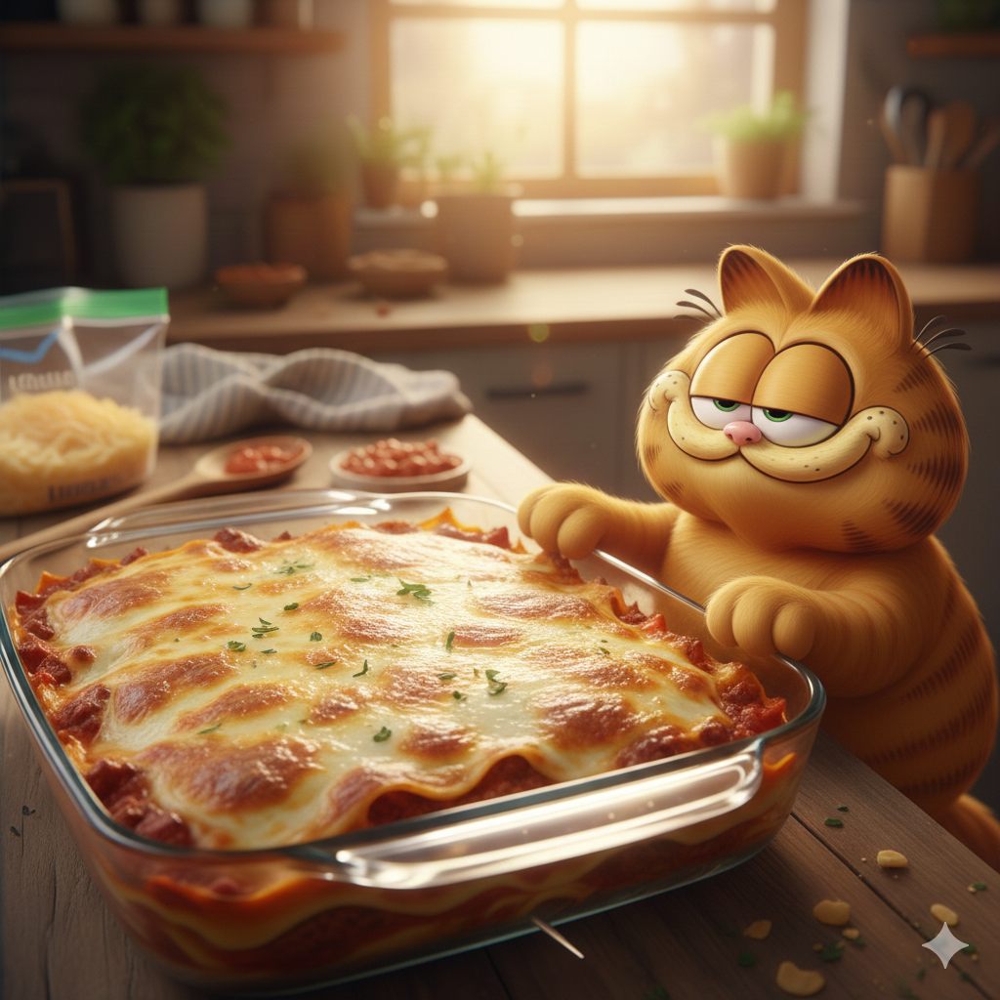

Lasagna

Garfield's Delight
Listen, if you’re looking for a salad recipe, you’ve taken a wrong turn at 1978. We’re talking about lasagna: the only reason Mondays are even remotely tolerable and the undisputed king of all noodle-based architecture. A proper lasagna shouldn't just sit on a plate; it should dominate it. I’m talking about a structural masterpiece of wide, wavy pasta ribbons acting as the velvet curtains for a show-stopping performance of rich, herby tomato sauce and ground meat that actually has something to say. If it doesn't have enough cheese to make a doctor sweat just looking at it, you’re doing it wrong.
The secret to a "Garfield-approved" tray is the stratification of joy. You need a creamy ricotta layer that’s thick enough to lose a remote in, topped with a blanket of mozzarella that stretches from here to the kitchen cupboards. When it emerges from the oven, bubbling like a delicious, orange-hued volcano, you let it rest—mostly so you don't burn your tongue, but also to admire its majesty. It’s heavy, it’s cheesy, and it’s the only thing standing between me and a very long, very necessary nap. Now, quit reading and start layering; that pan isn't going to empty itself.
Ingredients
- 1 box (12–15) lasagna noodles (boil them or go "oven-ready" if you’re as lazy as I am).
- 1 lb ground beef (the fattier, the better).
- 1 lb Italian sausage (for that "kick" that keeps Odie away).
- 1 medium onion, diced (try not to cry; it’s just a vegetable).
- 3 cloves garlic, minced.
- 45 oz marinara sauce (two jars or one giant one).
- 1 tbsp tomato paste.
- 15 oz ricotta cheese (the cloud you want to nap on).
- 1 egg (to hold it together, like my ego).
- 1/2 cup grated Parmesan.
- 1 tsp Italian seasoning.
- 4 cups shredded mozzarella (if you can still see the pasta, you haven't used enough).
Steps
- Brown the Meat: Sauté the beef, sausage, and onion until brown. Add garlic for the last minute so it doesn't burn (unlike my temper on a Monday). Drain the grease—or don't, I’m a cat, not a doctor.
- Simmer the Sauce: Stir in the marinara and tomato paste. Let it bubble for 10–15 minutes. It should look like a delicious red swamp.
- Mix the Clouds: In a bowl, whisk the ricotta, egg, Parmesan, and herbs. This is the glue that keeps the joy from sliding off the plate.
- The First Layer: Spread a thin layer of sauce in a 9x13 pan. It keeps the noodles from sticking, which is more than I can say for Odie.
- Build the Tower: Layer: Noodles → Ricotta Mixture → Meat Sauce → Handful of Mozzarella. Repeat until you run out of ingredients or the pan starts to look like a skyscraper.
- The Grand Finale: Top the final layer of noodles with the rest of the sauce and a massive blanket of mozzarella.
- Bake: Cover with foil (spray it with oil first so it doesn't steal your cheese!) and bake at 375°F (190°C) for 30 minutes.
- The Reveal: Remove the foil and bake for another 15 minutes until the cheese is bubbling and golden.
- The Hardest Part: Let it rest for 15 minutes. This allows the layers to set so it doesn't turn into lasagna soup. Use this time to stare intensely at your bowl until the humans get the hint.
Pro Tip
If the dog looks interested, tell him it’s made of celery. Works every time.
Home